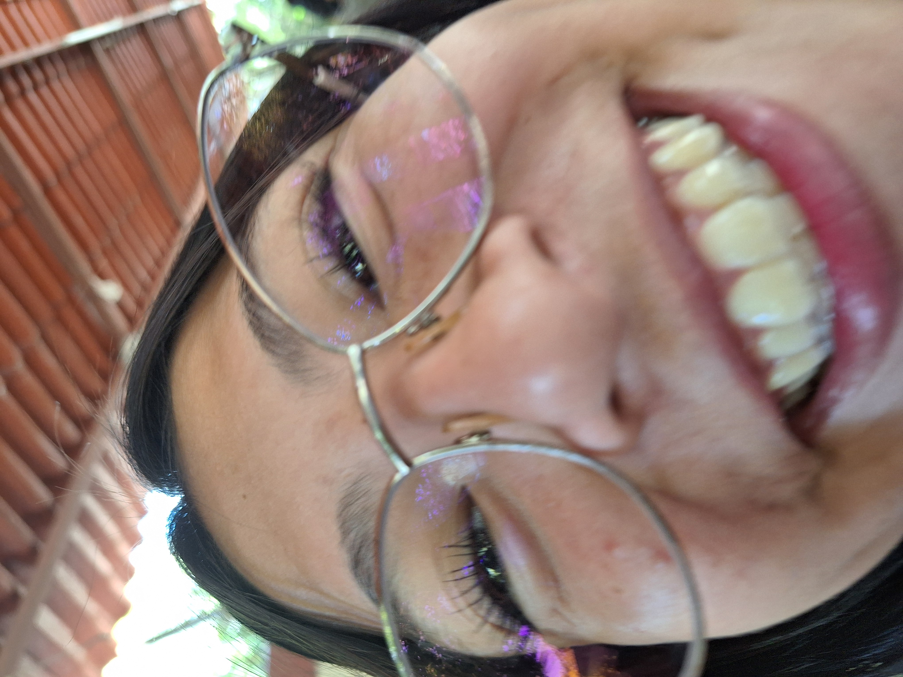
no tenia confianza suficiente para tomarte fotos de los principios de que nos conocimos pq pues no te ofendas pero pense que me ibas a dejar de hablar y la 1ra foto que tome fue esta
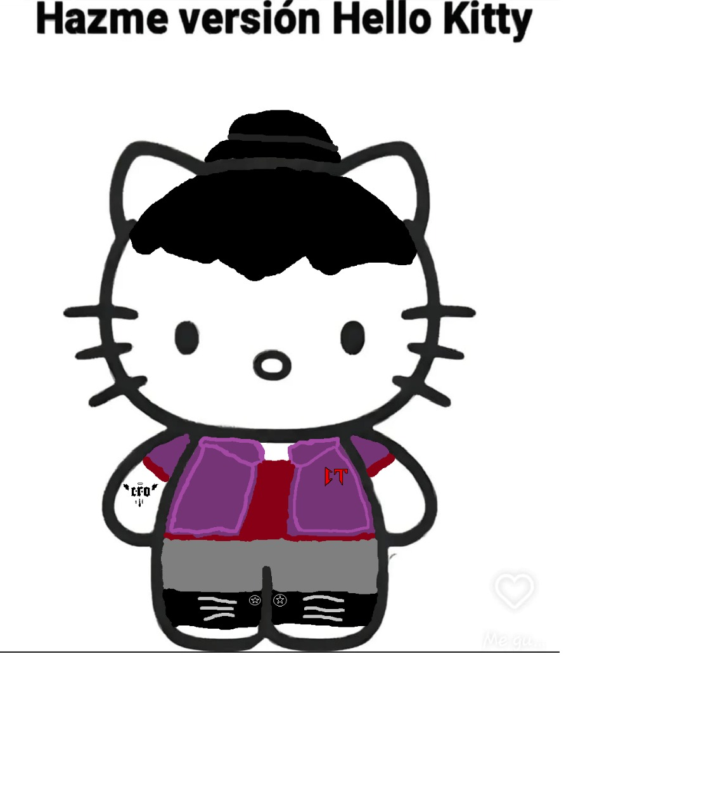
Este fue un regalo que me pediste hacer donde puse tus colores favoritos o los que me dijiste que eran y cosas que me recordaron a ti
empecé a pedirte cosas y resulto este videito
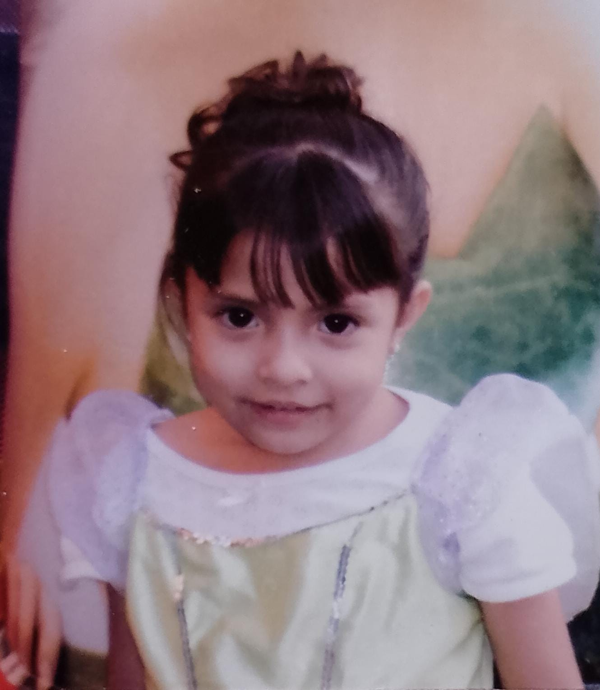
llegamos a tanta confianza que me diste fotos tuyas de pequeña y esta se volvio mi favorita

lo emocionado que estaba al ver que te pusite esto de foto de perfil que no supe como expresar como te queria
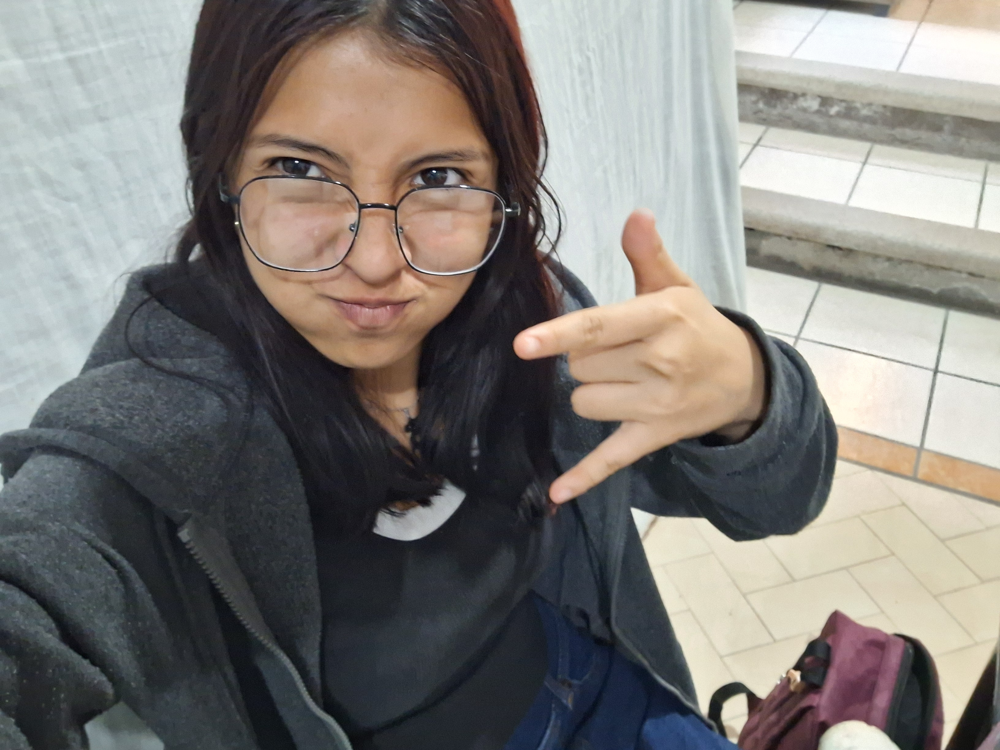
este fue la primera vez que te presente a mi mamá y un descuido te tomaste fotos y jamas las borre esperando un dia poder publicarlas
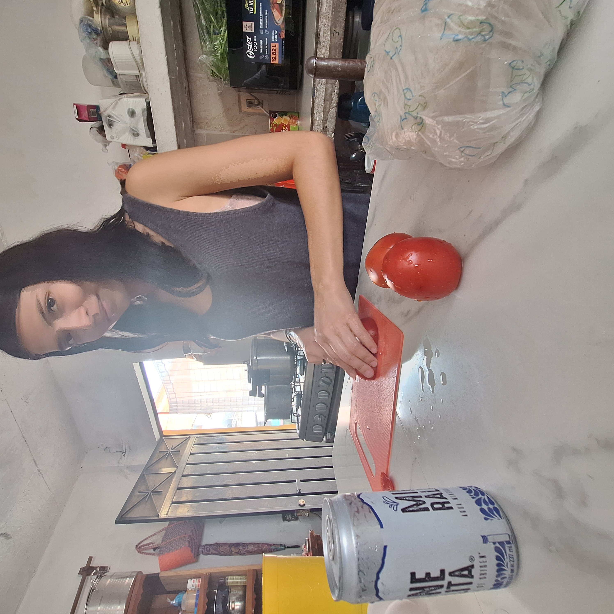
y creo yo fue la primera vez que yo fui a tu casa y me hiciste de desayunar huevito a la mexicana, mi excusa fue de que tenia que recoger un papel de la prepa
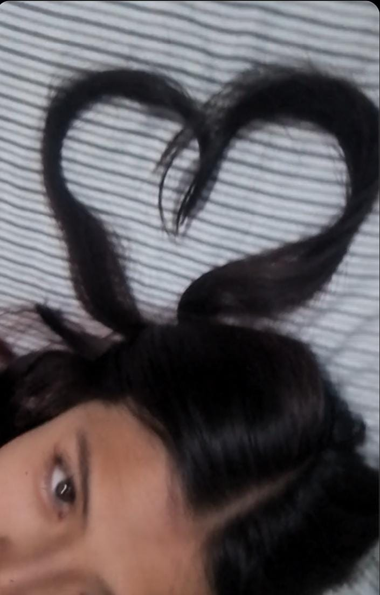
Pedi mi fondo de pantalla que me duro como 2 meses JAJAJA (no porque no quisiera ns si fue toño u otra persona quien me critico la vdd)
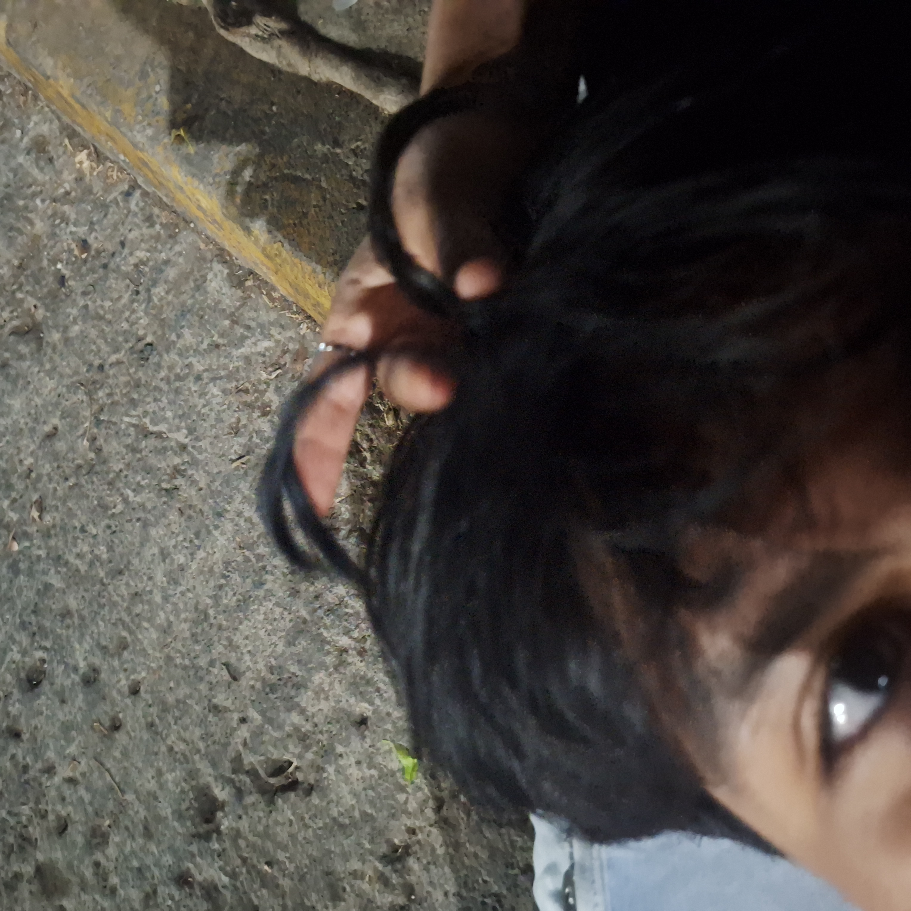
❀FRUTO 9mi peinado toco que ver y ps milagro que me deje aparte me recordo la vez que me pusiste una pinza color rosa mi maestra de etica se rio de mi y me dijo vas a exponer divino y no re cuerdo quein fue que empezo a decir baras baras xd
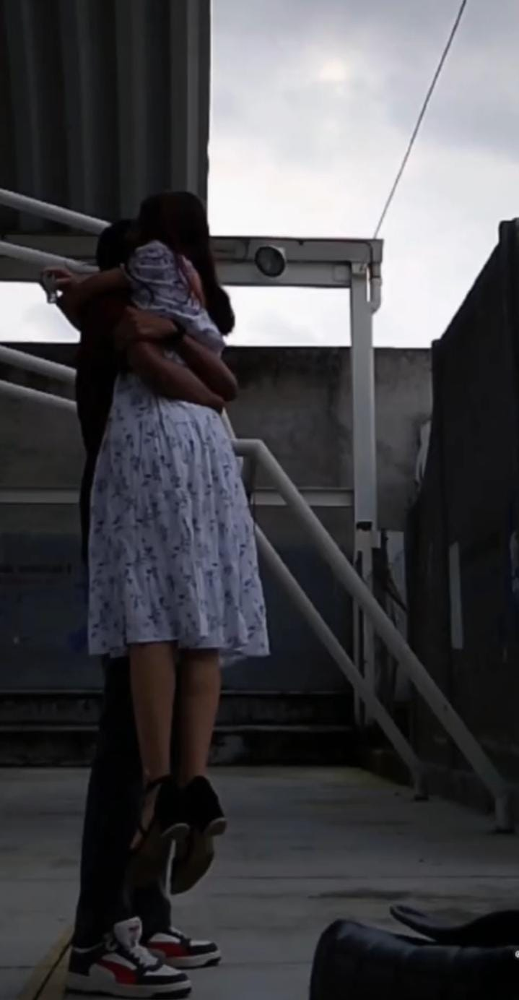
La vez que menti para poder salirme de donde estaba y que pudiera estar contigo tan solo 5 minutos
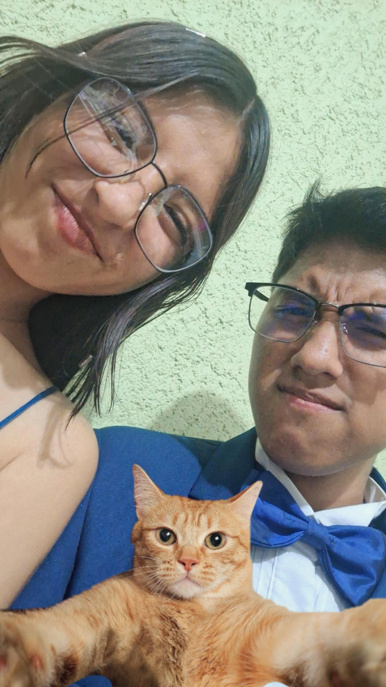
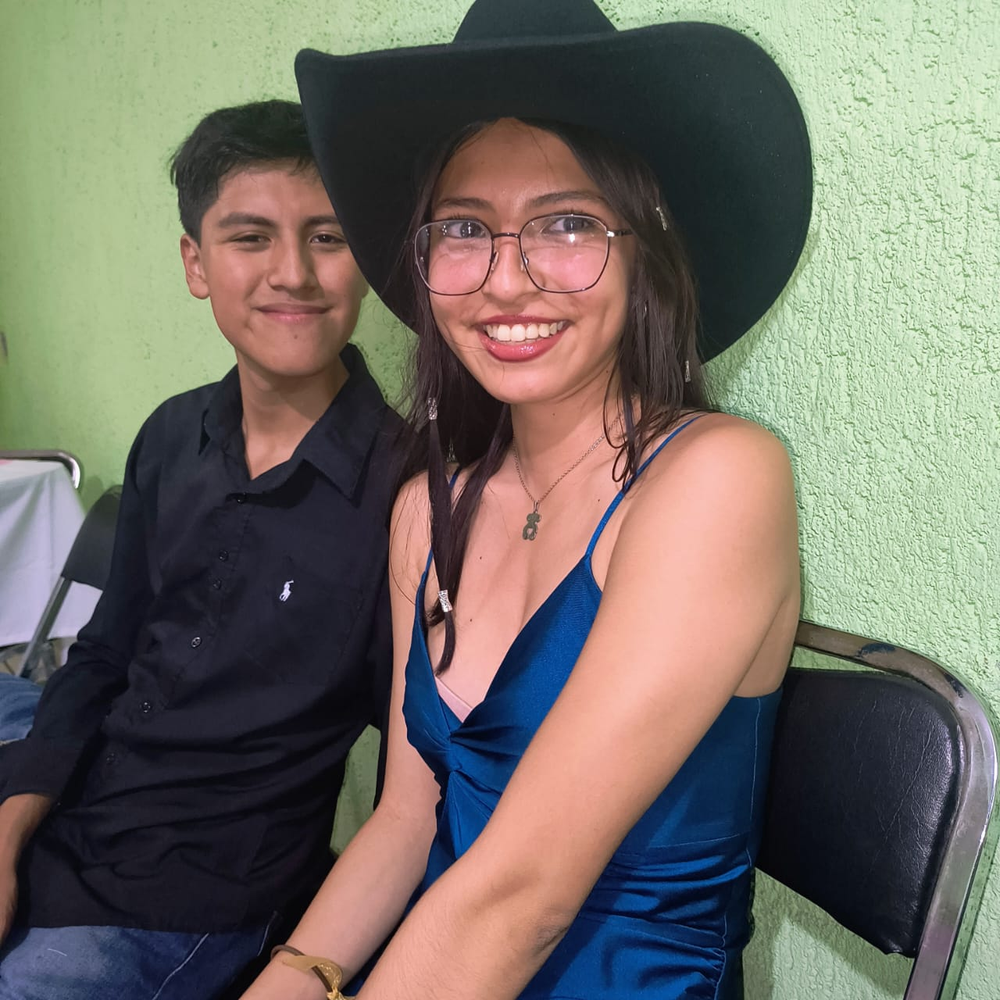
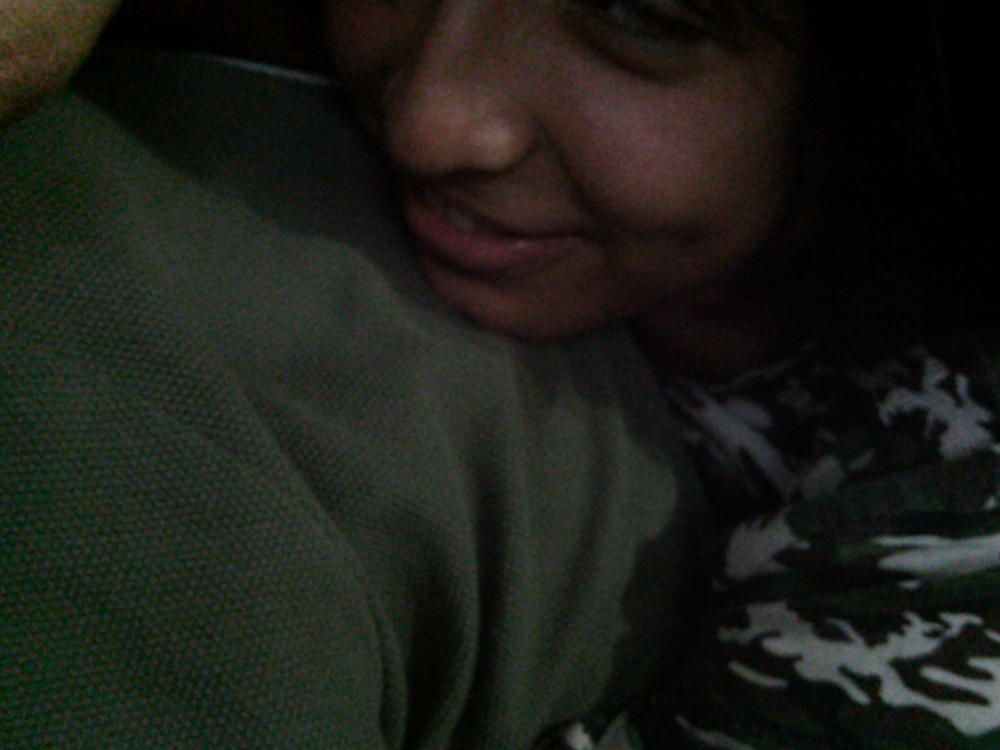

y bn aqui estan nuestras primeras fotos juntos posando y tmb las ultimas que tome (Desliza la foto →)
↑ De estas raíces, crecieron nuestros mejores recuerdos o bn para mi aun faltan un chingo pero no se xd ↑

Aquí empezó todo o bn se supone que es la fecha que nos hicimos amigos y por hacer un trend de tiktok de foto de la nasa busque la fecha y era esta foto
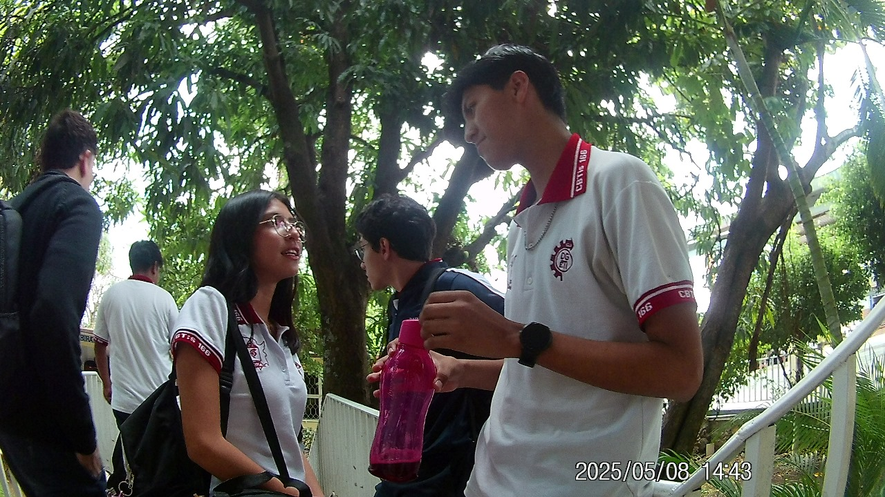
Nuestra base se que no es de las primeras fotos pero el hablar por los pasillos o lugares de la prepa cada que podiamos era lo mjr era especial
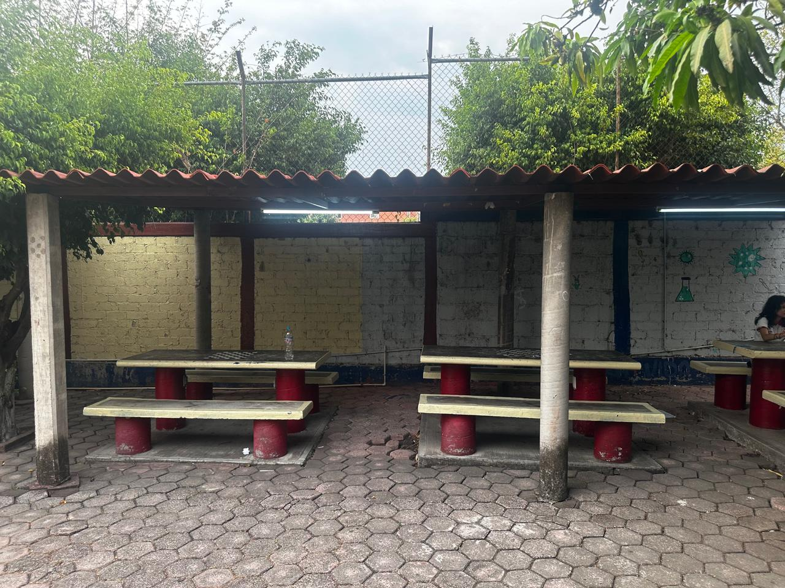
Lo que nos conectó fue estas sillas piteras que ps llegaste llorando y fue que tuvimos la primera platica profunda